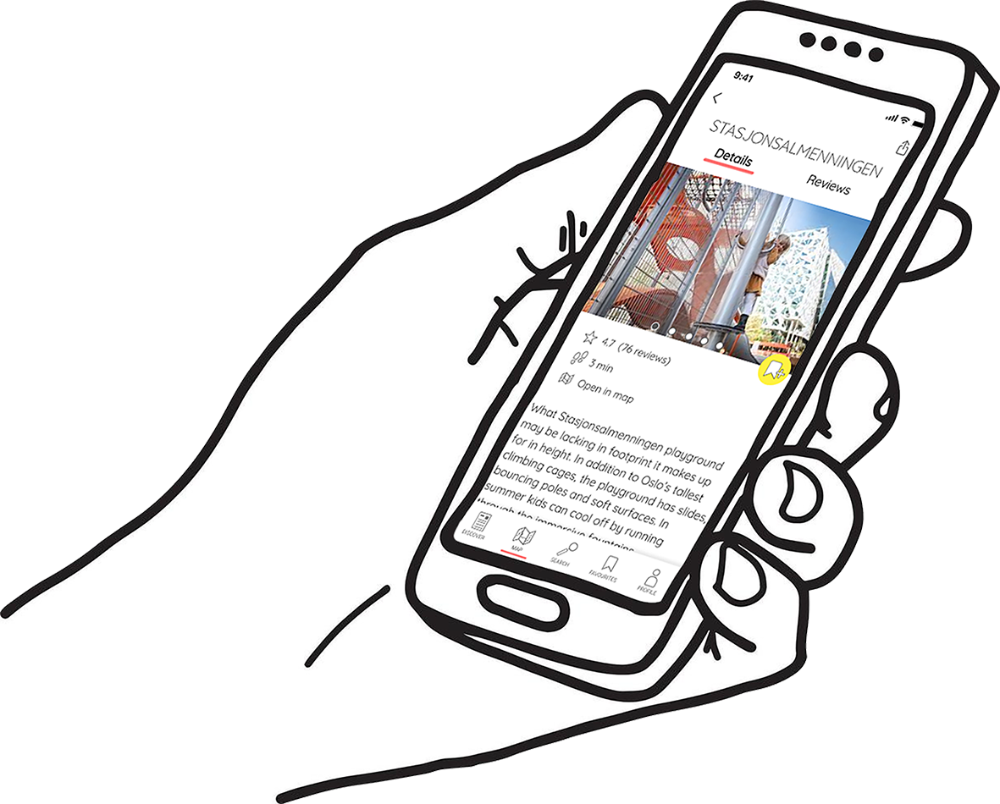

Case study 1: Charity project
A college project where I picked a non-profit cause, gathered user insights and produced a webpage that would promote the cause to a target group.

Case study 2: Tourism app prototype
A college project where I designed and prototyped a new tourism app, based on an idea I gathered from user interviews.
